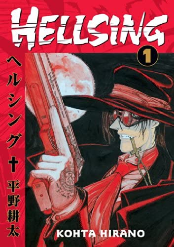
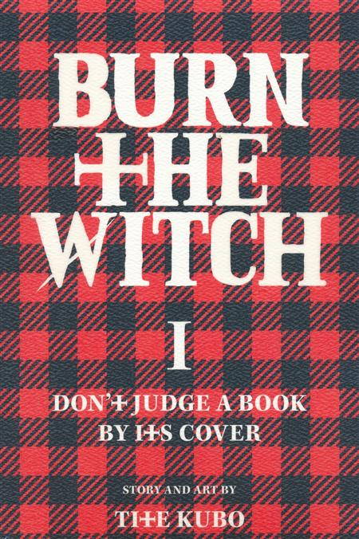
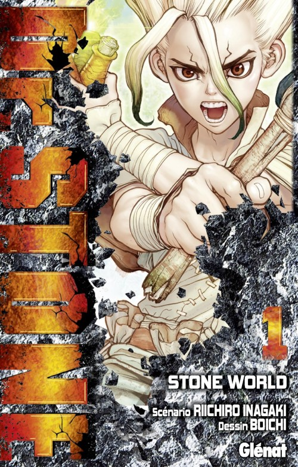

- Hellsing
-
For centuries, many secret organizations have taken part in
exterminating various types of dangerous monsters. One of them is the
England-based Hellsing, run by its cunning leader, Sir Integra
Fairbrook Wingates Hellsing. Her greatest hunter, and trump card, is
Alucard, an unbeatable vampire genetically modified by her father.
Despite him being one of "them," he swore to be her protector and
servant. A new crisis begins and with the help of Seras Victoria, his
recently turned vampire partner, Alucard has to uncover the truth
behind the mysterious vampire attacks. Not every human is bound to be
his ally in this battle, and he will not hesitate to kill anyone who
stands in his way.

- Burn the Witch
-
Ninny Spangcole is the leader of popular girl group, Cecile Die Twice,
but her ambitions stretch far beyond a successful music career. In the
hidden underground world of Reverse London, Ninny and her partner Noel
"Niiha" Niihashi strive to achieve loftier goals as "Witches," members
of the organization Wing Bind which is dedicated to the handling of
dragons. These powerful creatures once caused over half of all
casualties in the city proper, prior to Reverse London splitting away
from Front London. As dragons are invisible to most Front Londoners,
their existence has become a mere myth, and Reverse Londoners have
taken up the front lines. Thus, Wing Bind was created, prohibiting
non-licensed individuals from coming into any contact with dragons.
Ninny and Noel have their work cut out for them when they are assigned
as the caretakers of Balgo Ywain Parks and his dog Osushi-chan. With
trouble persistently trailing close behind him, the two girls are left
to deal with the aftermath. Even more problems arise when Macy
Baljure, Ninny’s former bandmate, appears in Reverse London with a
dragon by her side.

- Dr. Stone
-
When a mysterious light suddenly engulfs Earth, humanity is left
petrified, frozen in stone. Thousands of years later, the world is
teeming with vegetation, and forests have taken the places of cities
that once stood proudly. One of the very first to emerge from their
stone prison is Taiju Ooki, who finds that his good friend, a
brilliant young scientist named Senkuu, has been preparing for his
awakening. While Taiju wishes to save the girl he loves, Senkuu is
determined to figure out the cause behind the strange phenomenon and
restore the world to its former glory. But when they free the
infamously powerful Tsukasa Shishiou in order to gain an upper hand
against the dangers in an unfamiliar world, they realize that their
new comrade has other plans. Tsukasa sees their predicament as a
chance to start over; free from the corruption and destruction wrought
by technology, he will stop at nothing to achieve his goals. With both
sides unable to see eye to eye, Senkuu and his devotion to science
will clash with Tsukasa and his primal nature in what will truly be a
battle of the ages.
